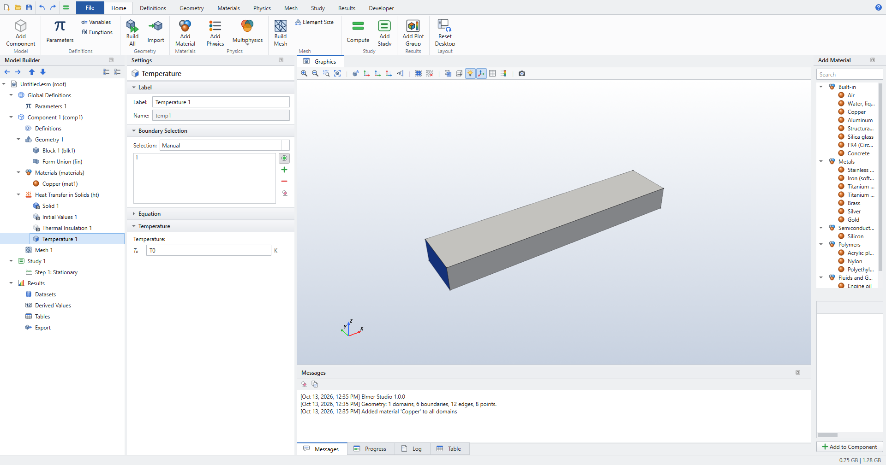

Selections
Most features apply to a set of geometric entities: a material or a heat source to domains, a boundary condition to boundaries, a fillet to points, a coupling operator to any level. The Selection section of the Settings window holds that set.

Picking entities in the Graphics window
-
Select the feature in the Model Builder. Its selection becomes active: the green button next to the list is on, and the Graphics window switches to the feature’s level (domains, boundaries, edges or points).
-
Hover over the geometry. The entity under the cursor turns red, and the status bar names it.
-
Click to add it to the selection (blue). Click a selected entity to remove it.
Useful helpers:
-
Transparency (Graphics toolbar) to reach inner or hidden faces;
-
Show Labels to display the entity numbers;
-
Select All and Clear Selection in the Graphics toolbar;
-
the buttons beside the list: activate/deactivate picking, add, remove, clear.
You can also type numbers into the list.
The Selection list
The Selection box above the list offers:
| Choice | Meaning |
|---|---|
Manual |
The numbers in the list. |
All domains / All boundaries / … |
Every entity of that level, now and after geometry changes. |
a Box Selection’s name |
The entities of that named selection (see [box]). |
| All boundaries means every boundary, including interior ones between two domains, as in COMSOL. Default boundary features (Thermal Insulation, Wall, …) are the exception: they apply only to exterior boundaries. |
Overriding
When two features of the same physics interface select the same boundary, the one lower in the Model Builder wins. A default feature covers whatever no other feature claims.
Selections that follow geometry edits
A selection of entity numbers remembers what each selected entity is: its geometry object and its position and size within that object. When the geometry changes (a dimension, a new object, a deleted one) and its numbers shift, the next build finds each selected entity again and renumbers the selection. Messages says what changed, for example Temperature 1: boundary 6 renumbered to 7 (the geometry changed). COMSOL calls this associative geometry. An entity that no longer exists is removed from the selection, the node gets a red mark, and its tooltip says Boundary 6 no longer exist after the geometry changed: check the selection. Picking entities again clears the mark.
The selections of geometry objects (Block 1 (blk1) in the Selection list), Box Selections and All follow the geometry by construction. Use them where you can.
Box Selections: selections that follow the geometry
Entity numbers depend on position. If a parameter changes the geometry, for example a sweep over an amplitude or a width, the numbers can change, and a manual selection may then point at the wrong face. A Box Selection avoids that:
-
Click .
-
Choose the Geometric entity level (Domain, Boundary, Edge or Point).
-
Enter the box limits (x/y/z minimum and maximum). Leave a limit blank for no limit. Numbers without units are in the geometry length unit, and parameters are allowed.
-
Choose Include entity if Entity inside box or Entity intersects box.
-
Build the geometry (F8). Selecting the Box Selection highlights its entities.
Then, in any feature at that level, choose the Box Selection’s name in the Selection box. Each time the geometry is built, including for each step of a parametric sweep, the Box Selection is evaluated again. Every feature that uses it gets the right entities. Results computed in a sweep remember the entities of their own run.
For an electrode that must stay the electrode while its shape is swept, use a box that just contains it, for example y maximum = a0 for a wavy surface at the bottom of the cell.
|
Editing the list by hand (clicking or typing) turns a named selection back into a Manual one.